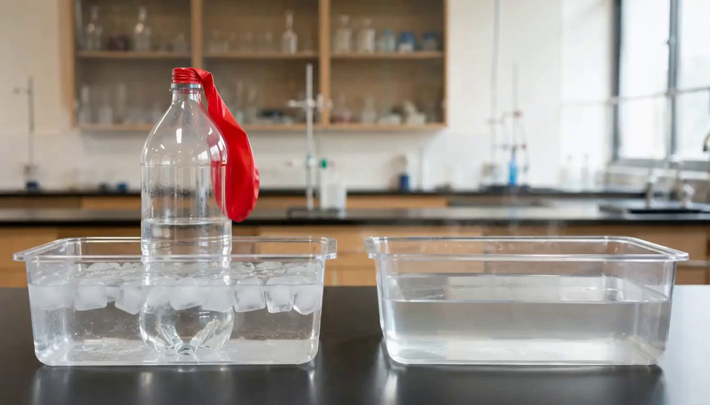
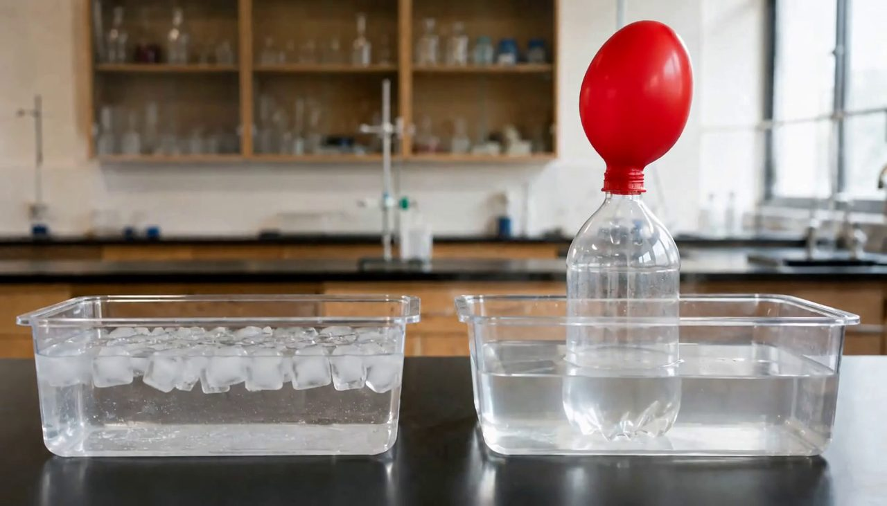

부산상용 도구 묶음
펜즈 (PENZ)
2026년 9월 개통. 계정 하나로 제미나이 · MS 코파일럿 · 어도비 파이어플라이 · 챗GPT · 캔바 교육용을 씁니다. 영상은 이 도구들 안에서 만듭니다.
초1~고3과 교직원 전체. 전학·진학해도 같은 계정을 씁니다.
모든 교과 · 에이전트 + 영상 생성
생성형 AI로 수업에 쓸 영상을 만드는 방법입니다. 어느 교과든 같습니다 — 단원과 받고 싶은 질문을 에이전트에게 적어 주면 프롬프트 세 개가 나오고, 그걸 교육청 AI 플랫폼에 넣으면 4~15초 영상이 나옵니다. 도입 장면, 상황 제시, 전후 비교처럼 짧고 굵게 쓸 때 가장 힘이 납니다. 과학 교사이시면 과학 전용 자료도 있습니다.
개념을 설명하는 영상
도식, 수식, 연표, 지도 해설처럼 정확해야 하는 것. 생성형 AI가 조용히 틀리는 자리라 그건 교과서와 판서에 맡깁니다.
짧고 굵은 장면 하나
도입에서 호기심을 건드리는 장면, 상황 제시, 전후 비교, 정리 때 되돌아보는 장면. 국어의 빈 의자든 사회의 골목이든 설명 없이 보여 주는 4~15초면 충분합니다.
이 페이지는 길지만, 하는 일은 넷뿐입니다. 「재생」을 누르면 아래 재료 하나가 영상이 되기까지를 그대로 보여 드립니다. 여기 나오는 프롬프트·이미지·영상은 전부 실제로 만든 것입니다. 예시는 과학이지만 흐름은 어느 교과나 똑같습니다.
1. 학년·단원 : 중1 · 기체의 성질
4. 받고 싶은 학생 질문 : 병에 아무것도 안 넣었는데 풍선이 왜 부풀까?
5. 무대 : 과학실 실험대
단원과 질문만 넣었는데 프롬프트 세 개가 나옵니다. 에이전트 지시문은 아래에서 복사합니다.


배경 문장을 두 프롬프트에 똑같이 썼기 때문에 같은 실험실이 나옵니다. 달라진 건 병의 자리와 풍선뿐입니다.
이미지 두 장을 올리고 【4】 를 붙여넣습니다. 1,000자까지 들어가니 아껴 쓰지 마십시오.
끝입니다. 이걸 수업 첫 3분에 틀고, "왜 부풀까?"를 학생이 묻게 하면 됩니다.
아래는 서울 SEN스쿨을 예로 실제 화면을 그대로 옮겨 그린 것입니다. 도구가 달라도 순서는 같습니다. 이번에 눌러야 할 자리만 색으로 표시했습니다. AIEP를 쓰는 11개 시도교육청은 화면이 거의 같습니다 — 내 지역 주소는 맨 아래에 있습니다.
SEN스쿨 첫 화면에서 교사로 들어갑니다. @sen.go.kr 계정이 필요합니다.
첫 화면 오른쪽이 도구모음입니다. 열두 칸 가운데 SenGPT를 누르면 새 탭으로 열립니다.
도구모음이 뜨는 데 몇 초 걸립니다. 비어 보여도 조금 기다리십시오. 캔바와 미리캔버스도 여기 있습니다 — 나중에 영상을 이을 때 씁니다.
SenGPT 화면 맨 위에 탭이 줄지어 있습니다. 넷째 칸이 비디오입니다.
여기서 새 창이 뜹니다. 안 뜨면 위의 팝업 차단을 확인하십시오.
왼쪽 맨 위 두 칸입니다. 이미지가 아직 없으시면 바로 아래 「이미지 생성 도구」로 먼저 두 장을 만드십시오.
칸이 1,000자까지 들어갑니다. 아껴 쓰지 마십시오 — 짧으면 움직임의 순서를 모델이 제멋대로 정합니다.
수업에서 틀 거라면 16:9 · 768P 로 충분합니다. 길이는 4초에서 15초까지 늘릴 수 있습니다.
해상도를 2K로 올리면 오래 걸립니다. 연수장에서는 768P 로 두십시오.
몇 분 걸립니다. 오른쪽 내 비디오 목록에 쌓이고, 카드의 재사용을 누르면 같은 설정으로 다시 만들 수 있습니다.
기다리는 동안 옆 선생님 프롬프트를 읽고 “이 영상 보면 학생이 뭘 물을까”를 적어 보시면 시간이 아깝지 않습니다.
한 번에 만들 수 있는 건 15초까지입니다. 더 긴 이야기를 담고 싶으면 여러 편을 만들어 이어 붙입니다. 요령은 하나뿐입니다 — 앞 영상의 끝 프레임을 다음 영상의 첫 프레임으로 씁니다.
첫 프레임 A · 끝 프레임 B
첫 프레임 B · 끝 프레임 C
첫 프레임 C · 끝 프레임 D
이어 붙이면 4초 × 3편 = 12초가 아니라, 끊기지 않는 한 장면이 됩니다.
편집 프로그램을 새로 배우실 필요 없습니다. 붙이고, 자르고, 자막 넣는 것만 되면 수업에는 충분합니다.
윈도우 11에 이미 깔려 있습니다. 끌어다 놓고 이어 붙이면 끝. 학교 컴퓨터에서 설치 없이 바로 쓰는 게 가장 큰 장점입니다.
따로 가입하실 것 없습니다. SEN스쿨 첫 화면 도구모음에 이미 있습니다. 여러 클립을 올려 잇고 자막·음악까지. 부산 펜즈에도 들어 있습니다.
이것도 도구모음에 있습니다. 한글 글꼴과 템플릿이 많아 자막·표지를 붙일 때 편합니다.
자동 자막이 잘 됩니다. 학생 작품 편집에도 씁니다.
클립 몇 개를 잇고 다듬는 정도라면 이것으로도 됩니다.
편집은 아니지만, 수업에서 구간 반복 재생할 때 편합니다.
영상을 슬라이드에 넣고 자동 재생·반복으로 두면 도입 자료가 됩니다. 새 도구를 안 배워도 됩니다.
여섯 교과의 예시입니다. 과학 하나는 완성된 영상까지 보실 수 있고, 나머지 다섯은 프롬프트 세 개까지 드립니다. 이미지와 영상은 직접 만들어 보시는 자리입니다 — 그게 곧 실습입니다.
영상 생성 도구에서 할 일은 세 가지입니다.
① 첫 프레임 이미지 올리기 → ② 끝 프레임 이미지 올리기 → ③ 영상 프롬프트 붙여넣고 생성하기
영상 프롬프트는 1,000자 이내로 넣습니다. 아래 상자마다 글자 수가 함께 표시됩니다.
도식·수식·지도·연표처럼 조금이라도 틀린 개념을 심을 수 있는 것은 굳이 영상으로 시도하지 않으려는 것입니다. 이 선을 알고 시작하시는 편이 낫습니다.
보여만 주면 되는 것들
금지가 아니라 기본값입니다
왜 기본값이 “빼기”인가요? 개념 그림은 틀려도 그럴듯해 보여서, 학생이 그대로 받아들이기 쉽습니다. 그래서 가만두면 안 넣는 쪽으로 맞춰 두었습니다. 필요하시면 넣으십시오 — 다만 무엇이 틀렸는지 선생님이 먼저 보실 수 있을 때 넣는 것이 좋습니다.
틀린 자료에서 오류를 찾게 하는 것도 좋은 수업입니다
지도 경계를 엉뚱하게, 조선 시대 장면에 안 맞는 물건을, 화살표를 반대로 — 이렇게 일부러 틀리게 만들어 학생이 잡아내게 하실 거면, 에이전트에게 그렇게 시키십시오. 말리지 않습니다. 대신 세 가지를 반드시 같이 받으셔야 합니다.
지시문에 이 규칙이 들어 있어서, “틀리게 만들어 주세요”라고만 하셔도 에이전트가 세 가지를 함께 내놓습니다. 빌더의 8번 칸에 적으시면 됩니다.
SENGPT에 에이전트를 하나 만들어 두십시오. 다음부터는 단원과 받고 싶은 질문만 넣으면 장면 설계와 프롬프트 세 개가 한 번에 나옵니다.
질문을 끌어내는 영상만 만드는 것이 아닙니다. 상황을 보여 주고, 전후를 비교하고, 순서를 시연하고, 일부러 틀리고, 길게 잇고, 수업 끝에 되돌아보고, 학생이 만들게 할 수도 있습니다. 목적을 고르면 그에 맞는 지시문이 나옵니다. 교과 덧붙임은 어느 것에나 이어 붙습니다.
이름은 알아보기 쉽게 — 예: 질문 유발 영상 설계사
서울이 아니면 소속 교육청 AIEP 안의 AI 대화 도구에 같은 지시문을 넣으시면 됩니다. 지시문은 어디에 넣어도 같습니다.
버튼 하나로 전부 복사됩니다. 고치지 마시고 그대로 넣으십시오 — 금지 목록이 지시문 안에 들어 있어서, 이걸 빼면 에이전트가 입자 모형을 그리기 시작합니다.
에이전트 지시문은 교과를 가리지 않습니다. 여기서 교과를 고르면 그 교과에서 영상이 잘 하는 것, 조심할 것, 질문의 결, 무대가 덧붙습니다. 「기본 + 덧붙임 전체 복사」 한 번이면 그 교과 전용 에이전트가 됩니다.
아래 프롬프트 빌더에서 칸을 채우면 붙여넣을 문장이 만들어집니다.
6·7번 칸(예상·반전)은 비워도 됩니다. 비우면 에이전트가 서로 다른 세 가지 안을 먼저 제안합니다. 3번 칸(남길 한 문장)을 비우면 성취기준에서 좁혀 제안하고 먼저 여쭙습니다.
이미지 생성에 【2】【3】을, 영상 생성에 두 이미지와 【4】를 넣습니다.
저는 「AI 딸깍」이라는 말을 가장 경계합니다.
이 에이전트가 내놓는 것은 초안입니다. 장면 하나와 프롬프트 세 개, 그게 전부입니다. 그 장면이 우리 반 아이들에게 통할지, 이 질문이 다음 차시로 이어질지, 이 표현이 아이들 머릿속에 어떤 그림을 남길지 — 그건 판단해 주는 사람이 필요합니다.
그 판단은 저보다 훨씬 오래 아이들을 보아 오신 선생님들의 교육적 감식안이 합니다. 어떤 장면에서 우리 반이 조용해지는지, 어떤 질문에서 손이 올라오는지 아시는 눈 말입니다. 그 눈은 에이전트가 갖지 못합니다.
그래서 오늘 드리는 것은 완성품이 아니라 재료입니다. 다듬는 일이 선생님 몫으로 남는 것이 이 도구의 한계가 아니라, 제대로 된 자리라고 생각합니다.
지시문은 부탁하는 글이 아니라 설계된 물건이라, 문장마다 이유가 있습니다. 크게 셋입니다 — 무엇을 만드는지 첫 줄에 못박고, 규칙마다 왜 그런지를 같이 적고, 선생님이 막히실 자리에 미리 갈림길을 내 두는 것. 여기서 쓴 요령은 특정 플랫폼 전용이 아니라 어떤 에이전트를 만드실 때든 그대로 쓰입니다. 아래 인용은 첫 번째 에이전트(질문 유발 영상 설계사) 지시문 기준이고, 나머지 일곱도 같은 뼈대로 썼습니다.
성취기준만 주면 그 차시 안에서 끝나는 장면이 나옵니다. 그래서 빌더 3번 칸에 어제 만드신 것을 한 번 더 받습니다 — 국가 수준 핵심 아이디어를 이 단원 크기로 좁히고, 학기가 지나도 학생에게 남을 한 문장.
이 한 문장이 있어야 장면이 성취기준을 다루면서도 그 위쪽으로 뻗습니다. 지시문에도 「3번이 이 설계의 위쪽 끝이다」라고 못박아 두었고, 마지막 점검에서 이 장면이 그 한 문장까지 닿는지 에이전트가 스스로 답하게 했습니다.
이걸 안 쓰면 에이전트가 수업 지도안을 쓰거나 밀도를 설명하기 시작합니다. 무엇을 만들어 내는 기계인지를 맨 앞에 두면 대화가 옆으로 새지 않습니다.
“질문을 유발하게 해 줘”는 채점이 안 됩니다. 반대로 어디서 멈춰야 하는지를 주면 에이전트가 자기 결과를 그 잣대로 걸러 냅니다. 좋은 지시문은 목표보다 경계가 선명합니다.
“넣지 마라”라고만 하면 선생님이 정당하게 요청할 때도 거절합니다. “네가 먼저” 한 마디를 넣으면, 슬쩍 끼워 넣는 것만 막히고 요청한 것은 통과합니다.
이유 없는 규칙은 목록에 적힌 것만 막습니다. 목록 밖의 새로운 상황이 오면 그냥 통과시킵니다. 이유를 알면 처음 보는 경우에도 같은 판단을 합니다. 이건 사람을 가르칠 때와 같습니다.
일부러 틀린 자료를 만드는 건 좋은 수업입니다. 위험한 건 만든 사람이 뭐가 틀렸는지 모르는 것뿐입니다. 그래서 금지 대신 “정답지·발문·바로잡는 문장을 붙여라”로 조건을 걸었습니다.
생성형 AI는 지적하라고 시키지 않으면 문제를 말하지 않습니다. 그냥 만들어 줍니다. 이 한 줄이 “말 안 하는 것이 기본”을 “말하는 것이 기본”으로 바꿉니다.
금지 목록만 있으면 에이전트는 안전한 쪽으로만 피합니다. 아무도 안 궁금한 장면이 나옵니다. 되는 것을 구체적으로 줘야 아이디어가 나옵니다. 금지와 권장은 한 쌍으로 씁니다.
성취기준만 주면 그 차시 안에서 끝나는 장면이 나옵니다. 어제 김도윤 선생님 연수에서 국가 수준 핵심 아이디어를 이 단원 크기로 좁히고, 학기가 지나도 남을 한 문장을 만드신 그 칸을 여기서 다시 씁니다. 장면은 성취기준을 다루되 그 한 문장 쪽으로 뻗어야 합니다.
자유롭게 쓰라고 하면 두 장이 다른 세상이 되어 영상이 무너집니다. 좁힐수록 결과가 좋아지는 자리가 있습니다. 여기가 그 자리라서 가장 세게 묶었습니다.
선생님이 가장 많이 막히는 칸이 “학생이 뭘 예상할까”입니다. 이 분기를 안 써 두면 에이전트가 되물으며 멈춰 섭니다. 사용자가 못 채울 칸을 미리 예상해서 그때 뭘 할지 적어 둡니다.
「자를 종이에 가까이 대면 종이가 붙는」 장면을 만들었더니, 자가 멀어지는데 종이가 붙는 영상이 나왔습니다. 한 줄짜리 짧은 프롬프트로는 무엇이 원인이고 무엇이 결과인지 모델이 알 길이 없습니다.
그래서 초 단위로 구간을 끊고 움직임의 방향을 말로 박은 뒤, 마지막에 「멀어지는 동안 붙는 장면은 넣지 않는다」처럼 뒤집힌 경우를 콕 집어 막게 했습니다. 1,000자까지 쓸 수 있는데 100자만 쓰는 것이 가장 흔한 실수입니다.
“1,000자 이내로”만 쓰면 아무 데서나 자릅니다. 하필 제일 중요한 게 잘립니다. 무엇부터 버리고 무엇은 남길지를 정해 주면 짧아져도 장면이 살아 있습니다.
앞쪽 규칙만으로는 잘 안 지켜집니다. 마지막에 스스로 답하게 하면 훨씬 잘 지킵니다. 제목을 【 】로 고정한 것도 이유가 있습니다 — 매번 같은 자리에 나와야 선생님이 눈으로 찾아 복사합니다.
이 빌더는 질문 유발 영상 설계사 기준입니다. 다른 에이전트는 위 갤러리의 「입력 틀」을 복사해 채우십시오. 앞의 1~4번은 어제 A4 설계안에서 그대로 내려옵니다 — 성취기준(1번 칸), 남길 한 문장(2번 칸), 가장 강한 질문(3번 칸). 이 페이지가 채우는 것은 A4의 5번 칸「어떤 학습 경험을 제공할 것인가」입니다. 적으신 내용은 이 브라우저에만 저장되고 서버로 가지 않습니다.
어제 A4 2번 칸 — 핵심 아이디어·영속적 이해입니다. 국가 수준 문장을 그대로 옮기지 마시고 이 단원 크기로 좁힌, 학기가 지나도 남을 한 문장으로. 비우시면 에이전트가 2번에서 좁혀 제안하고 먼저 여쭙습니다.
4~15초짜리라 짧고 굵게 쓰는 자리에 맞습니다. 도입이 제일 흔하지만 그것만은 아닙니다. 영상은 재료일 뿐이고, 틀고 나서 무엇을 하느냐가 수업을 정합니다.
설명 없이 틀고 학생이 묻게 합니다. 아래 3분 운영이 이 경우입니다.
말이 필요한 순간, 선택의 순간을 보여 주고 "이 사람은 어떻게 할까"를 묻습니다.
같은 자리의 두 장면을 잇습니다. 무엇이 바뀌고 무엇이 그대로인지 찾게 합니다.
도입에서 튼 영상을 끝에 다시 틉니다. 이제 설명할 수 있는지 학생이 말해 봅니다.
끝 프레임을 다음 첫 프레임으로 물려 이어 붙입니다. 위 「장면 잇기」를 보십시오.
같은 방법을 학생에게 주면 "설명 없이 보여 주기"가 곧 표현 활동이 됩니다.
“오늘은 밀도를 배울 거예요” 같은 예고를 하면 학생은 답을 찾으러 갑니다. 그냥 틉니다.
두 번째는 시선이 달라집니다. 첫 장면과 끝 장면 사이에서 뭐가 달라졌는지 보게 됩니다.
바로 손들게 하면 서너 명만 말합니다. 먼저 혼자 쓰는 30초를 주면 전원이 하나씩 갖게 됩니다.
문장 시작을 정해 주면 훨씬 잘 나옵니다 — “왜 …일까?” / “만약 …라면 어떻게 될까?”
둘 중 더 궁금한 것 하나만 올리게 합니다. 고르는 과정이 이미 다듬기입니다.
이 차시에서 다룰 질문에 표시만 하고 넘어갑니다. 답을 그 자리에서 주면 다음 시간엔 아무도 안 씁니다.
AIEP는 전국 17개 가운데 11개 시도교육청이 함께 만든 「인공지능 맞춤형 교수학습 플랫폼」입니다. 이름은 지역마다 다르지만 안쪽은 같습니다. 이 페이지의 방법이 그대로 통합니다.
열한 곳 가운데 열 곳은 주소를 직접 확인했습니다. 세종은 공개된 주소를 찾지 못했습니다 — 아시는 분은 알려 주시면 채워 넣겠습니다. 로그인은 교육청 계정으로 합니다.
2026년 9월 개통. 계정 하나로 제미나이 · MS 코파일럿 · 어도비 파이어플라이 · 챗GPT · 캔바 교육용을 씁니다. 영상은 이 도구들 안에서 만듭니다.
초1~고3과 교직원 전체. 전학·진학해도 같은 계정을 씁니다.
AI 교수학습 플랫폼. 도내 전 학교로 넓히는 중입니다. 진단·콘텐츠 추천과 수업 운영 도구가 중심입니다.
시작·끝 프레임을 받는 도구는 이 페이지의 방법을 그대로 쓸 수 있습니다. 가격과 기능은 자주 바뀌니 쓰시기 전에 한 번 확인하십시오.
시작·끝 프레임 지원. 영상 편집 기능까지 한곳에.
시작·끝 프레임 지원. 무료 크레딧이 넉넉한 편.
시작·끝 프레임 지원. 자연스러운 움직임.
시작·끝 프레임 지원. 화질이 좋습니다.
짧은 장면과 효과에 강합니다.
사람 동작 표현이 좋은 편.
부산처럼 교육청이 상용 도구를 묶어 주는 곳이라면 제미나이(Veo)가 이미 계정 안에 들어 있을 수 있습니다. 먼저 확인해 보십시오.